Distributed Systems · Final Project
File Sharing System with Ubuntu & Puppy Linux
Role: Network Engineer — IP & Infrastructure
A client-server file sharing system running on a virtual network built in GNS3, with Cisco routers, an Ubuntu firewall/VPN gateway, and Puppy Linux clients. I handled everything related to the IP design: addressing, routing, NAT, firewall, and VPN.
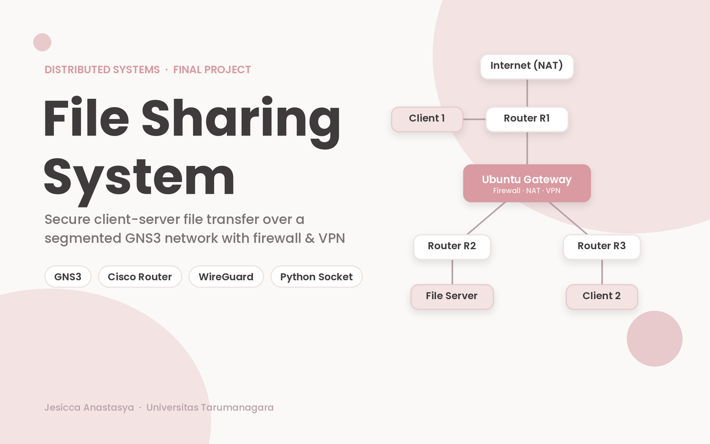
What is this project?
This project simulates how files are shared inside a local network. Ubuntu Server acts as the file server, and Puppy Linux machines act as clients that list, upload, and download files over TCP sockets. The whole environment runs virtually, using GNS3 for the topology and VirtualBox for the machines.
My role
I was responsible for the network side of the project, from planning the IP scheme to making sure every device could reach the server through a secured path.
- Designed the IP addressing: one
/27subnet per segment under172.25.15.0 - Configured the three Cisco routers (R1, R2, R3): interfaces, DNS, NAT, and static routes
- Set up the Ubuntu router as gateway, NAT, firewall (UFW), and WireGuard VPN server
- Configured the IP settings on both Puppy Linux clients
- Ran connectivity tests (ping) from every router, the gateway, and both clients
Key Features
Segmented Network
Three routers and three switches split clients and server into separate subnets.
Central Gateway
All inter-subnet traffic passes through one Ubuntu machine that filters it.
File Sharing
List, upload, and download files through a custom TCP protocol in Python.
Network Topology
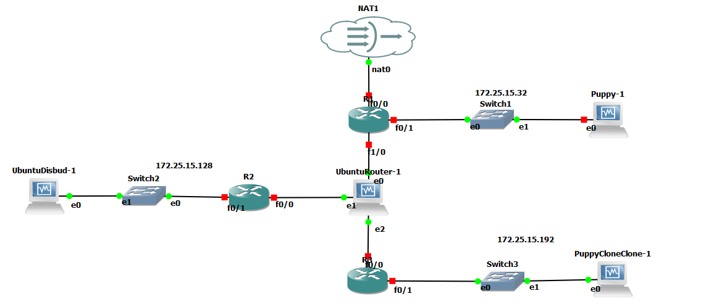
R1 connects to the internet through NAT1 and serves client 1 (Puppy-1). Every other segment is reached through the Ubuntu router, which sits in the middle as a firewall and VPN gateway. The server lives in its own segment behind R2.
IP Addressing Plan
| Device | Interface | IP address | Connected to |
|---|---|---|---|
| R1 | f0/0 | DHCP | NAT1 (internet) |
| R1 | f0/1 | 172.25.15.33/27 | Switch1 / Puppy-1 |
| R1 | f1/0 | 172.25.15.65/27 | UbuntuRouter |
| UbuntuRouter | e1 / e0 / e2 | .66 / .98 / .162 | R1 / R2 / R3 |
| R2 | — | 172.25.15.97 & .129 /27 | UbuntuRouter & Switch2 |
| R3 | f0/0, f0/1 | 172.25.15.161 & .193 /27 | UbuntuRouter & Switch3 |
| Puppy-1 (client 1) | e0 | 172.25.15.34 | gateway .33 |
| UbuntuDisbud-1 (server) | e0 | 172.25.15.130 | gateway .129 |
| PuppyCloneClone-1 (client 2) | e0 | 172.25.15.194 | gateway .193 |
Routing and NAT
- Static routing on all routers. R1 sends the server and client-2 subnets to the Ubuntu router (
172.25.15.66); R2 and R3 use it as their default route. - NAT overload on R1 (f0/0 outside, f0/1 inside) so internal hosts can reach the internet.
- DNS set to
8.8.8.8and8.8.4.4on routers and clients. - The Ubuntu router also does IP forwarding and
MASQUERADEwith iptables.
Router Configuration Results
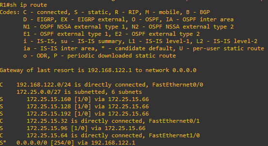
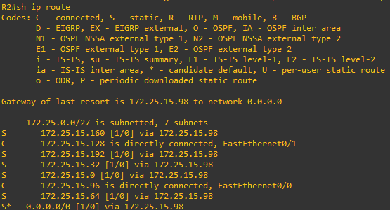
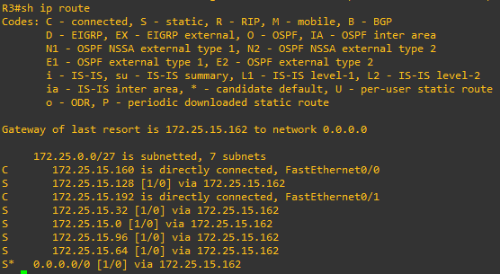
Application Architecture
The app uses a classic client-server model over TCP. The server listens on 0.0.0.0:5000,
handles one request at a time, and stores files in a shared_files folder.
Both clients reach it at 172.25.15.130.
Security Layers
Segmentation
Clients and server sit in different subnets. Traffic between them is forced through the Ubuntu gateway.
Firewall (UFW)
Incoming traffic is denied by default. Only SSH (rate-limited), HTTPS, and the VPN port are allowed.
WireGuard VPN
A VPN server on the gateway with its own key pair, and a peer configured with the server's public key.
How it was configured
- Router and NAT. Enabled forwarding, cleared old iptables rules, then added a
MASQUERADErule and forward rules for the internal interfaces. Rules were saved to/etc/iptables/rules.v4. - Firewall. Default deny incoming, allow outgoing,
ufw limit sshagainst brute-force attempts, and allow HTTPS. - VPN. Installed WireGuard, generated a private/public key pair with restricted file permissions, opened
51820/udp, and enabledwg-quick@wg0at boot. - Peer. Generated keys on the peer and exchanged the server public key.
Configuration Results
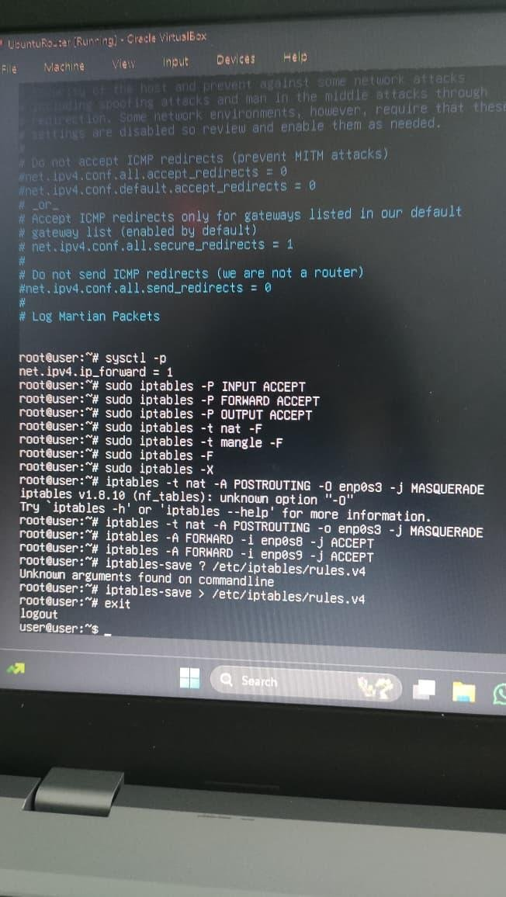
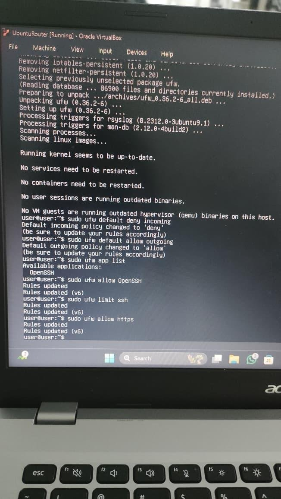
Scope note: the security work covers the network layer. The file transfer protocol itself has no user authentication or encryption yet; I listed both as next steps in the Reflection tab.
Application Protocol
The Python server and client talk through short text commands, then stream the file in 4096-byte chunks.
| Command | Server response | What happens |
|---|---|---|
LIST | FILES:a|b|c or NO_FILES | Returns the files in the shared folder |
UPLOAD:name | READY → UPLOAD_SUCCESS | Client sends the size, then the bytes |
DOWNLOAD:name | FILESIZE:n or FILE_NOT_FOUND | Client replies READY, server streams the file |
Server and Client
- Libraries:
socket,os,argparse - Server: TCP socket with
SO_REUSEADDR,listen(5), one handler per command, andtry/except/finallyso sockets always close - Client: interactive menu (list, upload, download, exit) or direct modes with
--modeand--file, plus a live progress bar
Code Screenshots
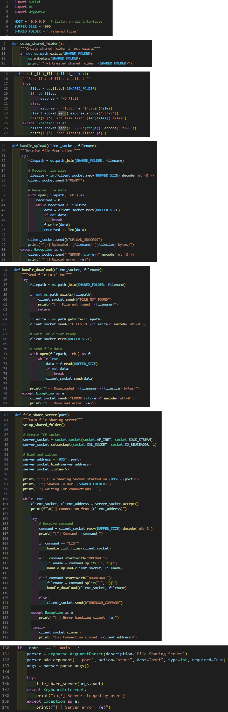
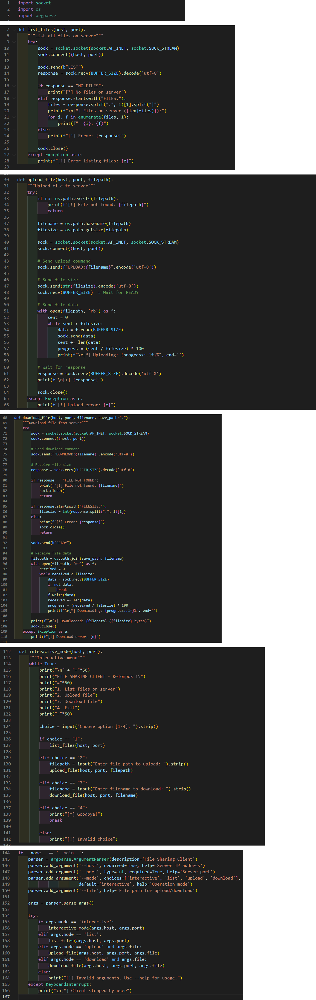
Run It
# On Ubuntu server
python3 FileShareServer.py --port=5000
# On Puppy Linux client
python3 FileShareClient.py --host=172.25.15.130 --port=5000Network Configuration Samples
Cisco R1: NAT and static routes
interface fa0/0
ip nat outside
interface fa0/1
ip nat inside
ip nat inside source list 1 interface fa0/0 overload
ip route 172.25.15.96 255.255.255.224 172.25.15.66
ip route 172.25.15.128 255.255.255.224 172.25.15.66
ip route 172.25.15.192 255.255.255.224 172.25.15.66Ubuntu router: NAT and firewall
iptables -t nat -A POSTROUTING -o enp0s3 -j MASQUERADE
iptables -A FORWARD -i enp0s8 -j ACCEPT
iptables -A FORWARD -i enp0s9 -j ACCEPT
ufw default deny incoming
ufw default allow outgoing
ufw limit ssh
ufw allow https
ufw allow 51820/udp
ufw enableWireGuard key generation
wg genkey | sudo tee /etc/wireguard/private.key
sudo chmod go= /etc/wireguard/private.key
sudo cat /etc/wireguard/private.key | wg pubkey | sudo tee /etc/wireguard/public.key
sudo systemctl enable --now wg-quick@wg0.serviceResults
- Ping tests were run from R1, R2, R3, the Ubuntu router, and both clients toward the other nodes and the server.
- Client 1 uploaded
test.txtto the server and gotUPLOAD_SUCCESS. - Client 2, in a different subnet, downloaded the same file successfully.
- The server log recorded both the
UPLOADandDOWNLOADoperations.
Screenshots
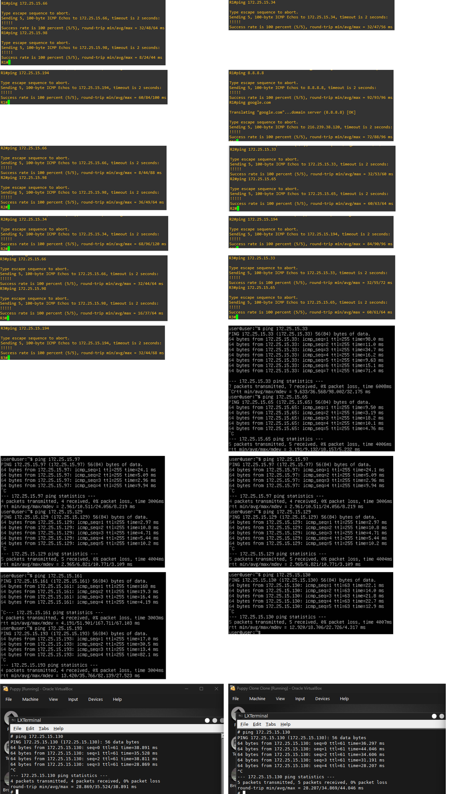
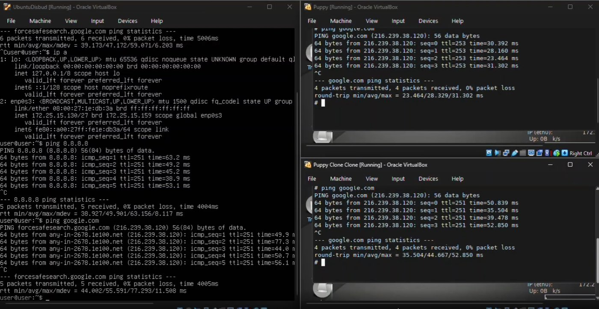
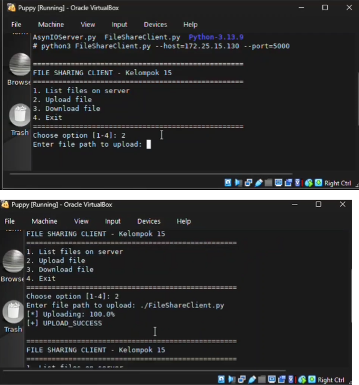
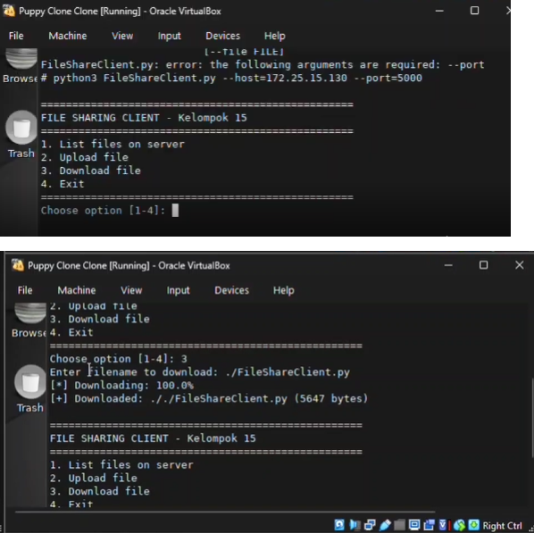
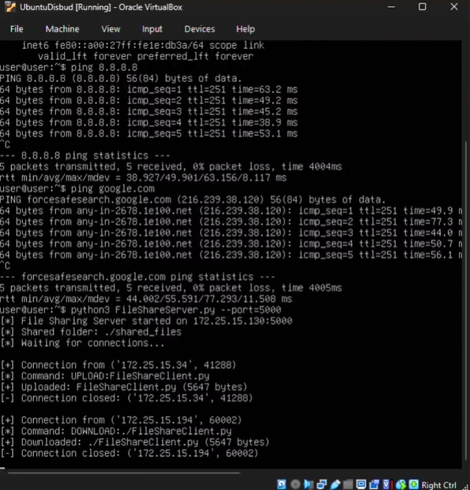
Challenges
GNS3 project would not open
An error saying it could not connect to the GNS3 VM blocked access to the project. I restarted the VM, checked the host-VM network adapters, and made sure the ports were not blocked by a firewall.
Slow large transfers
Running several VMs at once made big files slow, mostly because of virtual disk I/O.
Design trade-off
The server is synchronous and single-threaded: it finishes one client before accepting the next. That keeps transfers simple and avoids file race conditions, which suits a learning prototype. The downside is that a second client has to wait during a long transfer.
What I learned
- Planning subnets and routes carefully saves a lot of debugging time later
- How NAT, static routing, and a central firewall work together in a segmented network
- Testing layer by layer (ping first, then the application) makes problems easier to locate
Next steps
- User authentication and encrypted transfers
- Resume support for large files
- Concurrent clients with threading or asynchronous I/O